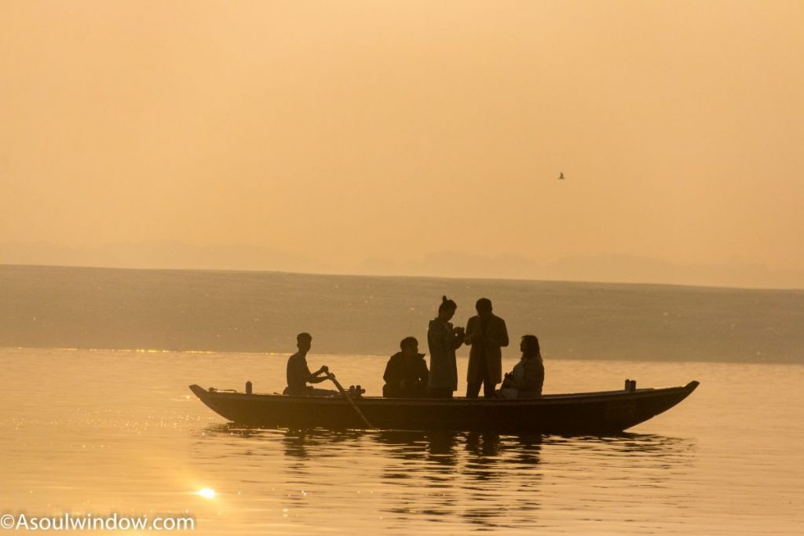
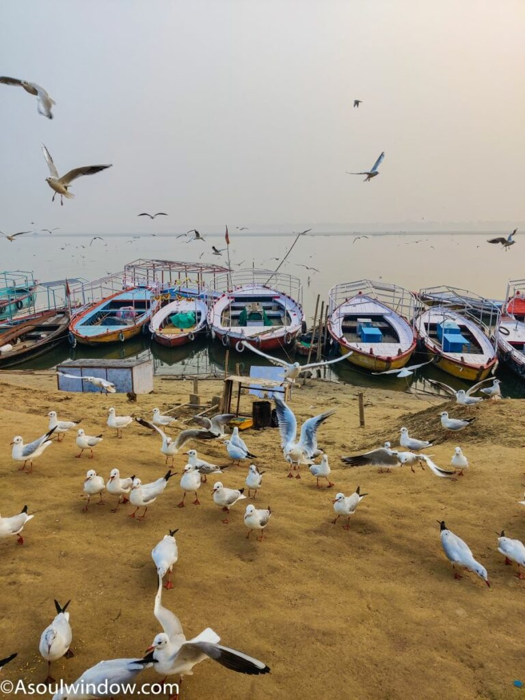
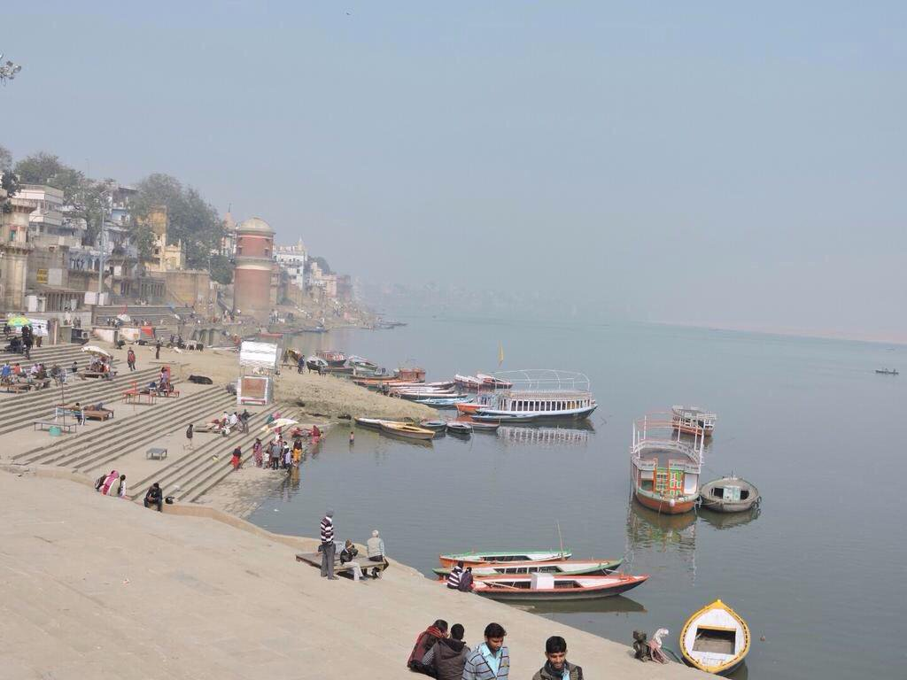
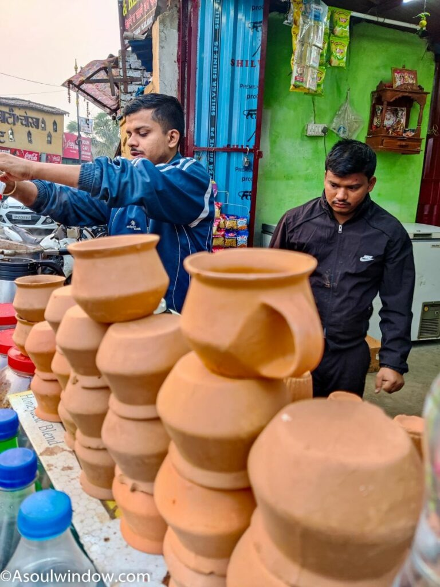
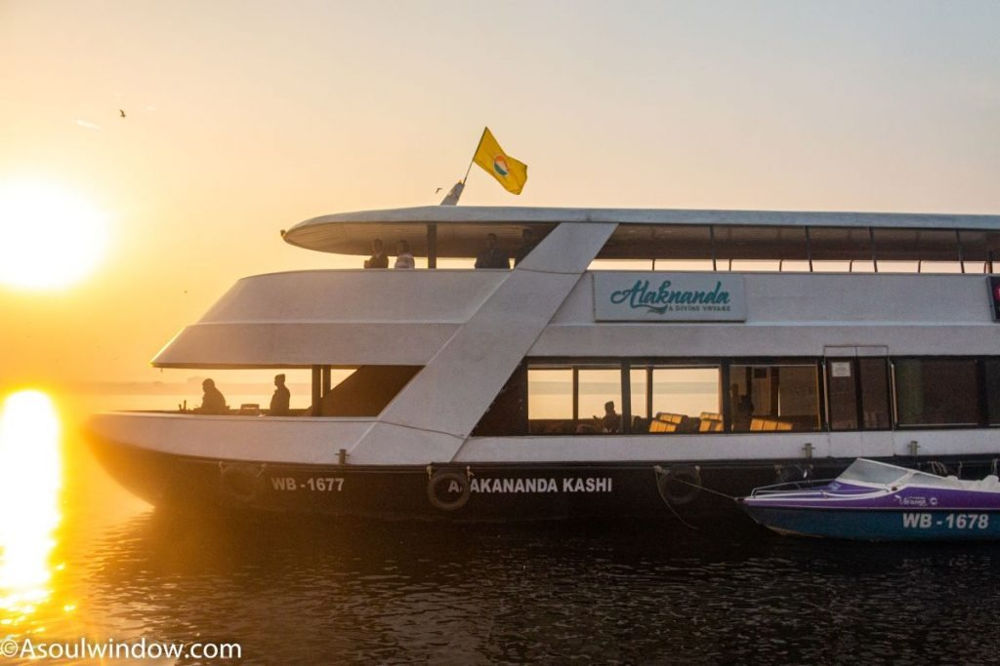

Assi Ghat is one of the most important of all the ghats of Varanasi. Popular with foreign tourist and locals alike, Assi Ghat is known for its historical importance, scenic boat rides on Ganga River, souvenir shops, nearby kushti akhadas, cool cafes, roof top restaurants, pizzerias, river front dining hot spots, overflowing pots of hot chai, cold lassis, Banarasiya Gilauri paan and what not!
Varanasi being one of the oldest continuously inhabited places on earth, the mention of Assi Ghat has been observed in several ancient Hindu scriptures such as Matsya Purana, Padma Purana, Kurma Purana, Agni Purana and even the more recent Kashi Khand. This is the biggest Assi Ghat Review you will find on the internet.
Assi Ghat is one of the top points of attractions in Varanasi. There are also several interesting places of interest near Assi Ghat which you can explore. Being a quick and easy weekend getaway from Lucknow, Kanpur, Jaunpur, Prayag, Delhi-NCR etc, Assi Ghat deserves even more love and attention! Here is all you wanted to know about Assi Ghat Varanasi.
My Experience of visiting Assi Ghat Banaras
People often ask me, “Which is the best ghat in India?”. From my personal experience, I feel Assi Ghat is one of the best ghats in India. I love the vibrancy and character of the Assi Ghat area the most. A mix of western and eastern sensibilities, Assi Ghat is one of the most unusual places to visit in Varanasi.
Every time I am in Varanasi, I have always stayed in and around Assi Ghat because of various reasons. I love Assi Ghat’s laidback pace of life, especially on a balmy winter afternoon. The low-cost of rooms around Assi Ghat, even in the peak season also make it one of my favorite places to stay. Thanks to a large number of western tourists who live in Assi Ghat, I am also able to eat world-class Italian and continental food at some of its iconic cafes and restaurants.
Why I also love Assi Ghat is that it is not as crowded and noisy as the other ghats of Kashi. Assi Ghat also have better access for vehicles. So, when I travelled to Assi Ghat with my uncle and aunty, I chose to stay in Assi Ghat because of easy parking accessibility (we had a car with us) and the ability to quickly reach Assi Ghat on foot for the morning and evening aarti ceremonies.
Why is Assi Ghat of Varanasi famous?
Which ghat is famous in Varanasi? Why is Assi Ghat famous? These are some frequently asked questions by tourists. There are so many reasons why tourists flock to Assi Ghat. What makes Assi Ghat so popular with foreigners and domestic Indian tourists alike is the fact that it is one of the biggest and cleanest of all the famous 84 ghats of Banaras. On a regular day, as many as 500 to 1000 people visit Assi Ghat every hour even at 5:00 a.m. It is that popular a ghat.
I noticed several young college going students from the nearby Banaras Hindu University (impressive campus, do visit!) playing guitar and singing songs on most of my days at Assi Ghat Kashi.
Do you know which is the cleanest ghat in Varanasi? Well, Assi Ghat is one of the cleanest ghats in Varanasi.
Some of the main reasons why tourists visit Assi Ghat are as below:
This is why Assi Ghat is one of the most famous tourist attractions in Varanasi!
Why Assi Ghat attracts foreigners
Why is Assi Ghat so popular among foreign tourists? Why foreigners go to Varanasi? Well, let me answer here in detail why Assi Ghat is a magnet for foreign tourists? Many foreign tourists from United States of America or U.S.A., United Kingdom or U.K., Germany, Australia, New Zealand, France, Italy, Denmark, China, Finland, U.A.E. and even Uganda stay at Assi Ghat when visiting Varanasi.
Thanks to the easy accessibility of vehicles, great vegan and vegetarian food, less crowds, open spaces and great vibes, several foreign students, tourists and even researchers call Assi Ghat home as they stay here for long-term.
Where do most foreigners stay in Varanasi? And why? Most of the foreigners who visit Varanasi stay in the Assi Ghat area due to less crowds, easy accessibility of vehicles, great western food and wide-open spaces. Now you know why Assi Ghat indeed is the best place to see in Varanasi!
Nomenclature/Etymology of Assi Ghat
Why is Assi Ghat called so? Here is a detailed information on why and how did Assi Ghat get its name? There are various interesting stories on why Assi Ghat is named so! It is an interesting name and is unlike the name of any other ghat of Varanasi. Here is the interesting Assi Ghat story.
How did Assi Ghat and Kashi become holy?
Here is story version 1. Why is it called Assi Ghat? As per a legend, the powerful Hindu Goddess Durga Maa, threw her sword after she killed the demons Shumbha and Nishumbha. The exact location where the sword fell tore apart the earth and gave result to the formation of a river which was later named as Assi. Thus, the peaceful Assi Ghat is named after the Assi River.
Here is story version 2. As per another legend, Lord Rudra, who is a form of Shiv Bhagwan wasangry at thebad behavior of the asuras. Enraged, hekilled a total of 80 asurasat what is now Assi Ghat. Since 80 means Assi in Hindi, it was named as Assi Ghat later.
Where is Assi Ghat of Banaras located?
The southernmost of all the 84 holy ghats of Varanasi (now 85 including Namo Ghat) is known as Assi Ghat. Assi Ghat is located in the heart of Varanasi, which is also known as Banaras, Benaras or Kashi.
Address of Assi Ghat Varanasi is: Shivala, Varanasi, Uttar Pradesh, 221005, India.
Assi Ghat length
How long is Assi Ghat? Well, all ghats of Varanasi are of different sizes. Assi Ghat happens to be one of the longest ghats of Varanasi. Since Assi Ghat is located at the edge of where all ghats exist, it appears even longer and bigger than the other ghats of Kashi.
Which is the first ghat in Varanasi?
Well, if you start from Assi Ghat, it is the first of all the 84 ghats of Varanasi. And which is the last ghat in Varanasi? If you start at the newly built Namo Ghat, then Assi Ghat is the last ghat of Varanasi. There are no other ghats after the Assi Ghat. It is where the series of ghats start and end depending on where you start from.
Which River is Assi Ghat?
Assi Ghat is located at the confluence of the holy Ganga River and Assi River. Ganga River is the holiest of all the rivers in India. Hindus worship and offer prayers to Maa Ganga every day. The water of Ganga River also contains miraculous properties. It’s water never gets stale. Read more in the souvenir section of this blog.

Can we bath at Assi Ghat?
Can we take a bath at Assi Ghat? Yes, why not! In fact, many people take a holy dip in the pious Ganga River every day. The confluence of the Assi River and Ganga River is considered very auspicious by devout Hindus. This is why many devotees take a holy dip at Assi Ghat on a daily basis. On special occasion and Hindu festivals such as Probodhoni Ekadashi and Makar Sakranti, devotees take a holy dip at Assi Ghat in large numbers.
In the ancient Hindu scripture Kashi Khand, Assi Ghat is clearly mentioned as Assi “Saimbeda Tirtha”. This implies that the person who take a holy dip at the Assi Ghat at least once in his lifetime will earn the punya of all the Tirthas (pilgrimages) combined together. Having a bath here also gets one rid of all the sins committed in the past. People also take bath in the Ganga River here before the commence any pooja or rituals.
I have been told that taking a holy dip at Assi Ghat is akin to taking a holy dip in thousands of other holy rivers.
Faith and science are constant companions in Varanasi. Most of these Hindu festivals are highly backed by science as they fall on celestial events such as lunar eclipse or solar eclipse.
The popular occasions when Hindus congregate at Assi Ghat to take a holy dip are:
History of Assi Ghat
Assi Ghat has had a long and interesting history which many people are not aware of. The historical destination of Assi Ghat has remained in public memory since times immemorial.
Places to see in Assi Ghat of Varanasi
Assi Ghat has so many exciting tourist attractions. Some pf the best tourist places in Varanasi are located at walking distance from Assi Ghat. Calling Assi Ghat as one of the epicenters of Varanasi tourism should not be an overstatement. Some of the best major attractions around Assi Ghat are located at a radius of 1 kilometer.
Shivalinga under the Peepal Tree
Located right on the Assi Ghat is a Shivalinga under the sacred Peepal Tree. There are many deities here who are worshipped by the locals daily. Bhakts or pilgrims offer the holy water of Ganga River here after they take a dip in the River Ganga.
There are many more Hindu temples here such as the small marble temple. Devotees come to worship the Asisangameshwar lingam or Shivalinga here as well. Varanasi, after all is where Bhagwan Shivaa resides! This temple is one of the best places to visit in Assi Ghat, Varanasi.
Visit the nearby Tulsi Ghat
On which Ghat of Varanasi Tulsidas died? Great Hindu poet Tulsidas lived in the nearby Tulsi Ghat in 16th century and wrote the world-famous Ramcharitmanas and Hanuman Chalisa. Till I visited Varanasi, I didn’t know that Tulsidas had left for his heavenly abode at Assi Ghat Kashi.
Did you know that the Tulsi Ghat was known as Lolarka Ghat earlier? Tulsi Ghat has remained one of the major sightseeing attractions near Assi Ghat Varanasi since times immemorial. Do not forget to explore the must-visit attractions of Tulsi Ghat near Assi Ghat.
Visit Hanuman Ghat
I was wondering why everyone was selling idli and masala dosa in not only road side carts but also in cafes and restaurants. A large community from South of India live in Hanuman Ghat. The South Indian community has also built a new temple here.
Hanuman Ghat is also famous because the fifteenth-century Vaishnavite saint Vallabha was born here. It was he who played a role in the resurgence of the worship of Krishna Bhagwan. In fact, there is one more reason why Hanuman Ghat is so pious. You can also worship an unusual image of Ruru, the dog Bhairava, who is a ferocious and early form of Bhagwan Shiva. Do not miss paying respects to Sri Ruru Bhairav.
Hanuman Ghat is located very close to the Assi Ghat. Other nearby ghats are Ganga Mahal Ghat and Ravidas Ghat. Hanuman Ghat is the top place to see around Assi Ghat.
Visit Lolark Kund
Lolark Kund is off the touristy trail. But those who know about this hidden gem near Assi Ghat, love spending time here. Lolark Kund is a very unusual place to see in Varanasi. I am sure you had no idea that it existed till you read this blog. Lolark Kund is a rectangular water tank which is dug at least 15 meters below the ground level. The steps here are very steep, therefore you must be careful while going up and down the stairs. Mostly, you will not see many tourists here due to lack of awareness.
The usually abandoned water tank is abuzz with activity during the Lolarka Fair in August or September. This is when hordes of devotees worship Gods in the hope of the birth of a son. Not many people know that Lolark Kund is one of the oldest sites of Varanasi which still remains. It is, in fact one of the only 2 Sun sites which still exist. This place is associated with the origins of Hinduism. Even during the times of Gautam Buddha, people used to take bath here.
Much before the revered deities of Hinduism as we know today, 12 Aditya or 12 divisions of Sun were worshipped here. That makes it one of the most important places to see in Assi Ghat Banaras. Lolark Kund is a mus-see place near Assi Ghat, Varanasi. The Assi Ghat neighborhood is full of such hidden gems which are off the touristy trails.
Visit Tulsi Akhada in Assi Ghat
Do not miss an Akhada or wrestling match at Tulsi Ghat which is located close to the Assi Ghat. I visited the Tulsi Akhada early morning and observed not only the kushti (wrestling) match but also the daily routine of the desi pahalwan aka wrestlers. The wrestlers here spend all their life mastering wrestling, Indian style. The wrestlers are friendly and open to a chit-chat with you if you show interest. Visiting the Tulsi Akhada is one of the best immersive experiences which you can have in Varanasi. It is one of the most unusual things to do in Assi Ghat Benaras.
Top things to do in Assi Ghat of Banaras
What is there to do in Assi Ghat? There are several reasons why tourism at Assi Ghat is always so vibrant! There are so many great things to do in Assi Ghat. What no one tells you is that there are also many exciting free things to do in Assi Ghat!
Whether it is a ride in the hot air balloon, café hopping, pizzeria visits, visiting riverfront restaurants or enjoying a peaceful boat ride, there is a lot you can do in and around Assi Ghat Varanasi. There are also so many exciting things to do with family and kids in Assi Ghat Kashi.
Some of the top things to do in Assi Ghat are
Sip Modi Chai at Pappu Chaiwala Stall or Pappu Ki Adi
After Indian Prime Minister Shri Narendra Modi relished the tea at Pappu Ki Adi or Pappu Chaiwala Stall at Assi Ghat, it has become a very popular tea stall for piping hot tea, especially on a cold winter morning! Modi ji had enjoyed 3 cups of tea at this stall.
Due to the huge demand, this tea stall is open all day long. Located at the Assi Ghat, Pappu Chaiwala Stall is a very popular tea-shop near Assi Ghat of Varanasi. Tourists even come here to take selfies and pictures. There is always a long line to drink tea at this popular tea stall.
Talent Show at Assi Ghat
This event takes places every evening at Assi Ghat. If you think you have it in you, go and flaunt it! This talent show takes places every evening at 6 p.m. at Assi Ghat. This is why Assi Ghat is one of the top places to visit in Banaras.
Assi Ghat cruise booking
Assi Ghat cruise booking can also be done easily, if you want to experience it. The world class cruises offer an alternative view of the ghats of Varanasi. What I love about these cruises of Varanasi is that I can climb up on the open upper deck and enjoy the gorgeous views from a vantage point which never existed before the cruise services arrived in Varanasi. The four main types of cruises which run in Varanasi are
Ganga Vilas Luxury Cruise is the longest river cruise in the world. It covers a distance of an impressive 3200 kilometers in 50 days across 27 river systems in Indian states such as Uttar Pradesh, Bihar, West Bengal, Assam and even the neighboring country Bangladesh. It will also run on the mighty Brahmaputra River in the North East India.
You can enjoy these boat rides from the Assi Ghat. Do check out my detailed travel guide on the cruises of Varanasi here.
Conclusion: Is Assi Ghat of Varanasi worth visiting?
Why visit Assi Ghat of Varanasi? Here is the bottom line. Assi Ghat remains one of the most popular ghats of all the 84 ghats in Varanasi. No wonder then that every day, thousands of foreign tourists as well as domestic tourists and local people visit Assi Ghat. The Assi Ghat area is always teeming with good vibes and positivity.
To summarize, Assi Ghat is the cultural microcosm of all that which makes up India. In a nutshell, Assi ghat is one of the most famous and visited ghats of the Varanasi for tour and tourism. I hope this overview is the reason enough for you to visit Assi Ghat.
Do share this exhaustive travelogue style blog on Assi Ghat with your friends and family and inspire them to travel to Varanasi, the soul of India. I have explained all the elaborate details on Assi Ghat in this information packed blog. You will not find such deep insights on Assi Ghatelsewhere on the internet, old school travel guide books, magazines or newspapers.
The view from my Soul Window is Godly!
Pin this blog to save the blog and plan a trip later!